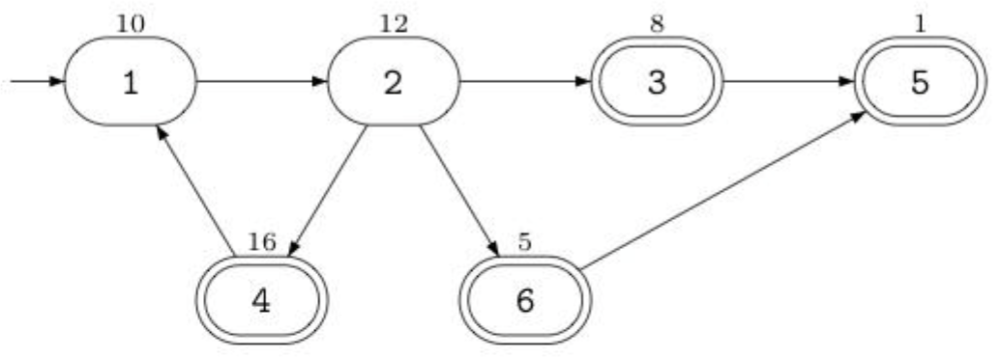

Siruseri 城中的道路都是单向的。不同的道路由路口连接。按照法律的规定，在每个路口都设立了一个 Siruseri 银行的 ATM 取款机。令人奇怪的是，Siruseri 的酒吧也都设在路口，虽然并不是每个路口都设有酒吧。
Banditji 计划实施 Siruseri 有史以来最惊天动地的 ATM 抢劫。他将从市中心出发，沿着单向道路行驶，抢劫所有他途径的 ATM 机，最终他将在一个酒吧庆祝他的胜利。
使用高超的黑客技术，他获知了每个 ATM 机中可以掠取的现金数额。他希望你帮助他计算从市中心出发最后到达某个酒吧时最多能抢劫的现金总数。他可以经过同一路口或道路任意多次。但只要他抢劫过某个 ATM 机后，该 ATM 机里面就不会再有钱了。
例如，假设该城中有 6 个路口，道路的连接情况如下图所示：

市中心在路口 1，由一个入口符号→来标识，那些有酒吧的路口用双圈来表示。每个 ATM 机中可取的钱数标在了路口的上方。在这个例子中，Banditji 能抢 劫的现金总数为 47，实施的抢劫路线是：1-2-4-1-2-3-5。
第一行包含两个整数 $N、M$。$N$ 表示路口的个数，$M$ 表示道路条数。接下来 $M$ 行，每行两个整数，这两个整数都在 $1$ 到 $N$ 之间，第 $i+1$ 行的两个整数表示第 $i$ 条道路的起点和终点的路口编号。接下来 $N$ 行，每行一个整数，按顺序表示每个路口处的 ATM 机中的钱数。接下来一行包含两个整数 $S、P$，$S$ 表示市中心的编号，也就是出发的路口。$P$ 表示酒吧数目。接下来的一行中有 $P$ 个整数，表示 $P$ 个有酒吧的路口的编号。
输出一个整数，表示 Banditji 从市中心开始到某个酒吧结束所能抢劫的最多的现金总数。
6 7 1 2 2 3 3 5 2 4 4 1 2 6 6 5 10 12 8 16 1 5 1 4 4 3 5 6
47
【数据范文】
50%的输入保证 $N, M \le3000$。所有的输入保证 $N, M \le 500000$。每个 ATM 机中可取的钱数为一个非负整数且不超过 4000。输入数据保证你可以从市中心沿着 Siruseri 的单向的道路到达其中的至少一个酒吧。
 Comet OJ
Comet OJ